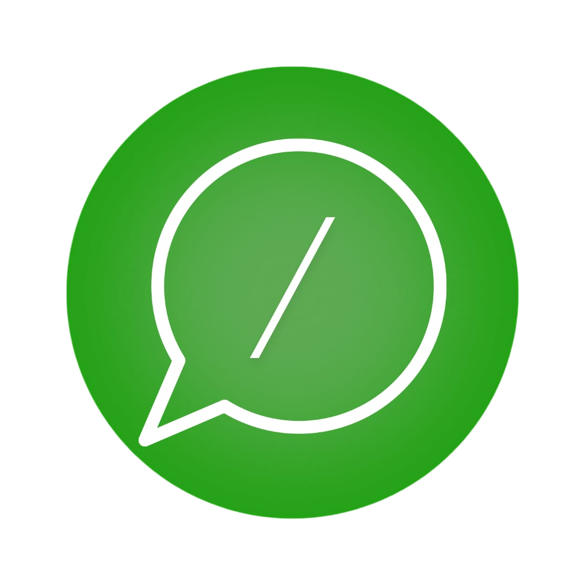
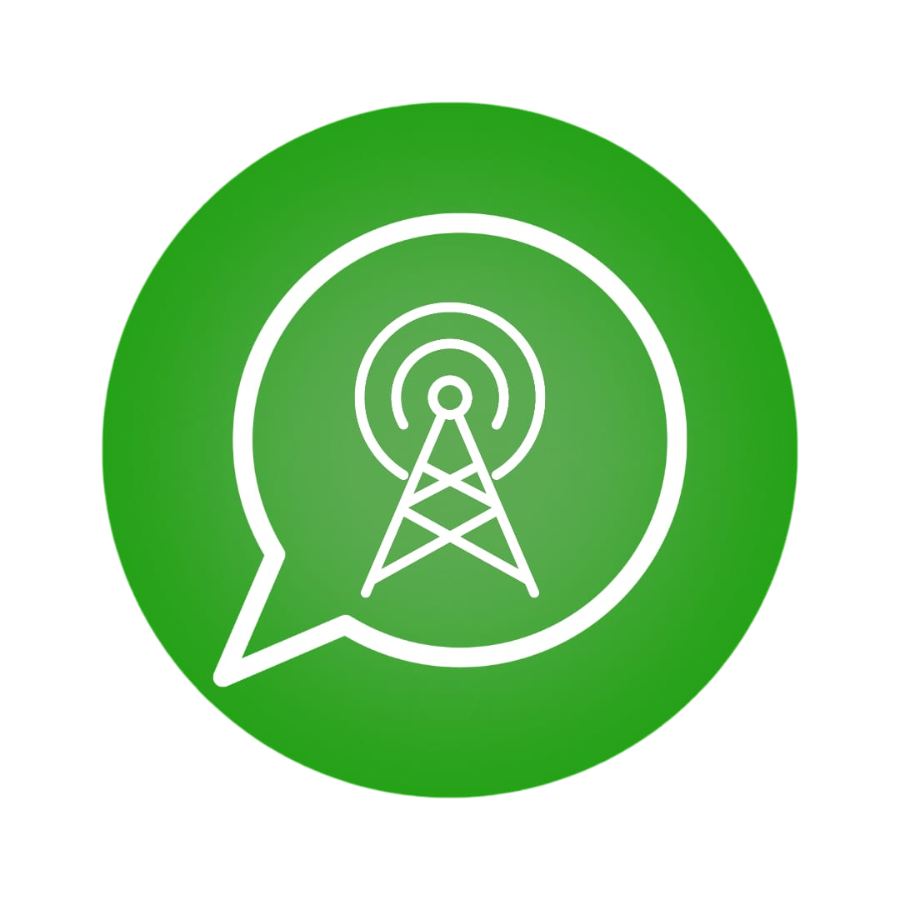

Criamos o projeto com foco em ajudar os microempreendedores (MEs) a captar e fidelizar clientes utilizando o WhatsApp Business. Para escolha da ferramenta pensamos na gratiuidade, acessibilidade e facilidade do uso, que seria ideal para os MEs com recusos limitados. O foco é trazer estratégias para que o ME desenvolva um perfil atrativo para o WhatsApp Business, garantindo uma experiência contínua e acessível para os clientes atuais e para atrair novos clientes.
-  Pare de digitar a mesma resposta e comece a vender mais rápido: Durante o chat com o cliente, utilize o caractere "/" (barra) como atalho para acessar instantaneamente suas Mensagens Rápidas configuradas (por exemplo: formas de pagamento, endereço, agradecimento).
- Use a IA a seu favor para profissionalizar sua comunicação: Utilize ferramentas de Inteligência Artificial para gerar rascunhos de mensagens automáticas (ausência, saudação) e respostas rápidas. Uma IA pode ajudar a criar textos claros, concisos e que transmitam uma imagem de marca mais profissional e coesa
-  Mantenha seus clientes sempre informados e engajados: Use a Lista de Transmissão do WhatsApp Business para enviar mensagens para múltiplos clientes de uma só vez, de forma individualizada (o cliente recebe como uma mensagem privada). Lembrete: Para que a mensagem chegue ao destinatário, ele precisa ter o seu número salvo na agenda dele. Incentive seus clientes a salvar o seu contato